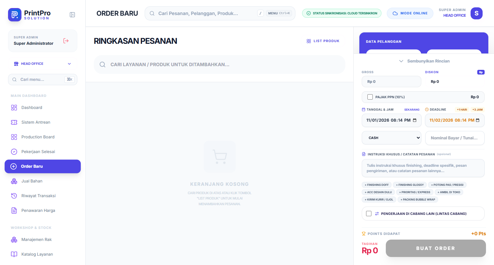
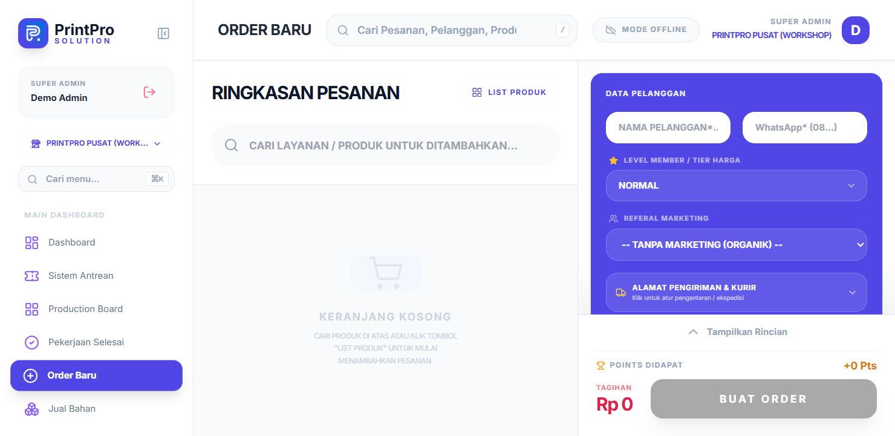
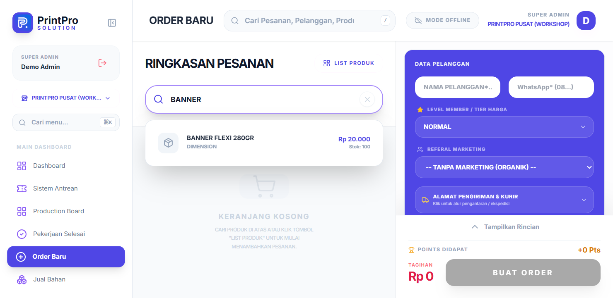
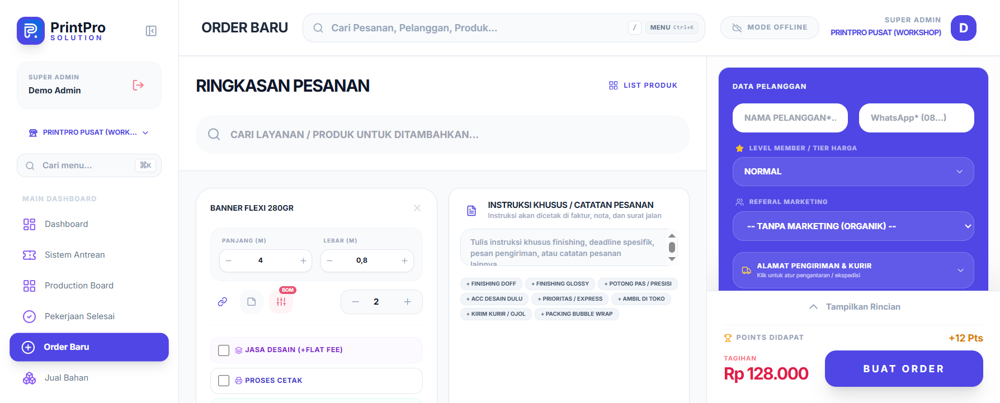
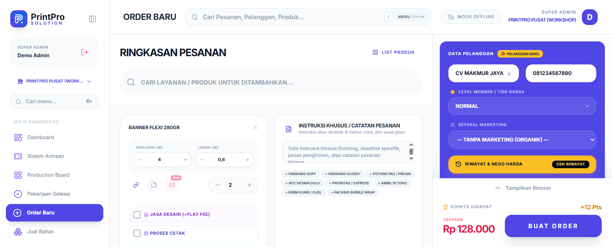
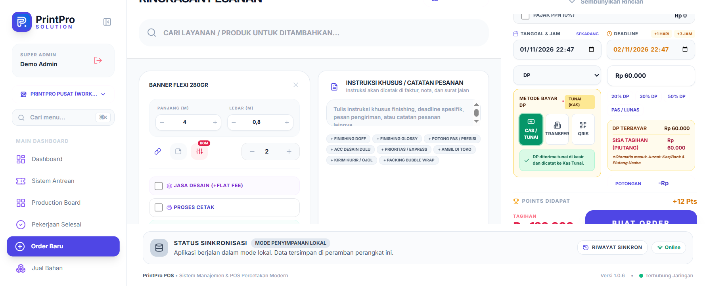
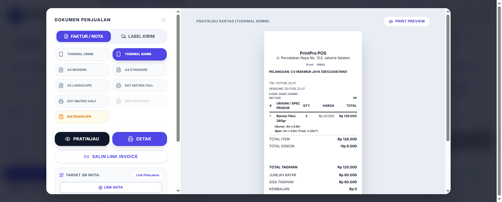
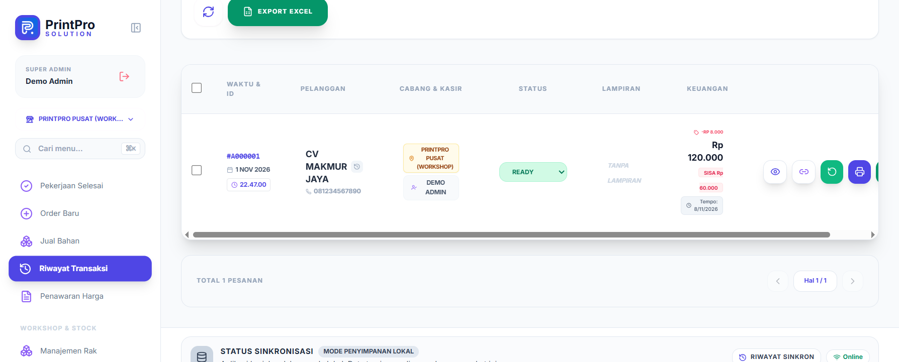

Bab 03 dari 27
Membuat Order Baru
Menu Order Baru adalah inti operasional percetakan.
3.1 Langkah membuat order
- Buka Order Baru.
- Pilih atau buat pelanggan. Untuk pelanggan baru, isi nama, nomor telepon/WhatsApp, dan alamat.
- Tambahkan item:
- Pilih produk/layanan dari katalog, atau
- Isi item manual dengan nama, ukuran, jumlah, dan harga.
- Sesuaikan spesifikasi: bahan, ukuran, jumlah sisi, finishing, warna, atau catatan desain.
- Atur diskon (nominal atau persen) dan pajak bila diperlukan.
- Pilih metode pembayaran dan masukkan jumlah yang dibayar.
- Tentukan cabang (untuk pengguna multi-cabang).
- Simpan. Nomor invoice dibuat otomatis.

Alur input order
Buka halaman Order Baru — Klik menu Order Baru. Area kiri menampilkan Ringkasan Pesanan dengan pencarian produk dan tombol List Produk; sisi kanan menampilkan kartu Data Pelanggan dan tombol BUAT ORDER yang masih tidak aktif selama keranjang kosong.

Gambar 3.2 — Halaman Order Baru dengan keranjang kosong. Cari produk — Ketik nama layanan pada kolom Cari layanan / produk untuk ditambahkan.... Hasil pencocokan muncul sebagai dropdown berisi nama produk, tipe harga, dan stok.

Gambar 3.3 — Hasil pencarian produk "banner". Konfigurasi item — Klik produk untuk membuka panel item. Untuk tipe
DIMENSION, isi Panjang (m), Lebar (m), dan Jumlah; luas dan Subtotal Item terhitung otomatis. Lengkapi opsi seperti Lebar Rol, Jasa Desain, Proses Cetak/Finishing, BOM, atau Catatan Item bila perlu.
Gambar 3.4 — Panel item Banner Flexi 280gr: ukuran 4 m × 0,8 m, jumlah 2, subtotal Rp 128.000. Isi data pelanggan — Pada kartu ungu Data Pelanggan, masukkan Nama Pelanggan dan Nomor WhatsApp. Pelanggan baru ditandai badge PELANGGAN BARU; jika nama/nomor sudah terdaftar, sistem menampilkan level member, poin, dan tombol Riwayat & Nego Harga.

Gambar 3.5 — Kartu Data Pelanggan untuk pelanggan baru. Atur diskon dan pembayaran — Klik Tampilkan Rincian untuk membuka blok ringkasan: Gross, Diskon (nominal atau persen), PPN, Tanggal & Jam, Deadline, serta Metode Pembayaran. Untuk uang muka, pilih metode DP, tentukan Metode Bayar DP (tunai/transfer/QRIS), lalu gunakan pintasan 20% / 30% / 50% DP atau Pas / Lunas. Sistem menampilkan DP Terbayar dan Sisa Tagihan (Piutang) yang otomatis masuk jurnal.

Gambar 3.6 — Pembayaran DP 50%: DP Rp 60.000, sisa tagihan (piutang) Rp 60.000. Simpan order — Klik BUAT ORDER. Nomor invoice dibuat otomatis (mis.
#A000001) dan modal Dokumen Penjualan muncul berisi pratinjau nota beserta pilihan format cetak (Faktur/Nota, Thermal, A4, Dot Matrix, Instruksi SPK), Salin Link Invoice, dan Kirim WA.
Gambar 3.7 — Nota hasil input order dengan metode DP. Verifikasi — Buka Riwayat Transaksi. Order baru tampil lengkap dengan pelanggan, cabang & kasir, status, nilai transaksi, dan sisa tagihan.

Gambar 3.8 — Order #A000001 muncul di Riwayat Transaksi dengan sisa Rp 60.000.
3.2 Tipe harga produk
Saat menambahkan item, perhatikan tipe perhitungan harga:
| Tipe | Perhitungan |
|---|---|
UNIT |
Harga × jumlah |
DIMENSION |
Harga × luas (m²) × jumlah |
DIMENSION_CM |
Harga × luas (cm²) × jumlah |
TIME |
Harga × durasi |
DIMENSION_TIME |
Harga × luas × durasi |
CUSTOM |
Harga diisi manual |
DIMENSION_CUSTOM |
Luas dihitung, harga final manual |
DIMENSION_CM_CUSTOM |
Luas cm dihitung, harga final manual |
Pastikan satuan yang dipakai konsisten. Kesalahan satuan adalah penyebab utama selisih harga.
3.3 Status order
Alur normal:
- PENDING
- DESIGNING
- PRINTING
- FINISHING
- READY
- DONE
Status tambahan:
CANCELLED— order dibatalkan. Catat alasannya.RETURNED— order dikembalikan/di-revisi.
Status dapat diubah dari Production Board, detail order, atau halaman Riwayat Transaksi. Setiap perubahan sebaiknya disertai catatan agar riwayat jelas.
3.4 Hal yang sering terlewat
- Nomor WhatsApp pelanggan untuk notifikasi otomatis.
- Tenggat waktu (deadline) yang realistis.
- File desain yang sudah disetujui pelanggan.
- Uang muka (DP) bila order bernilai besar.
- Cabang tujuan produksi untuk order antar cabang.